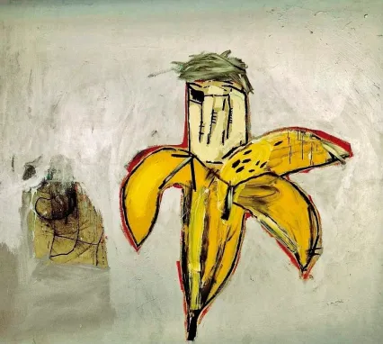

"Andy Warhol as a banana"
Jean-michel Basquiat
Jean-Michel Basquiat (1960-1988) "Banana" a/k/a "Brown Spots (Portraits of Andy Warhol as a Banana)" - Cette reproduction provient d'une lithographie en édition limitée (60/150) avec une signature imprimée et un surnom de Basquiat en marge. Il est basé sur l'acrylique et l'huile sur toile originaux de 76 par 84 pouces que l'artiste a peints en 1984. La feuille non encadrée mesure environ 15 x 11,25 pouces. C'est un portrait d'Andy Warhol sous la forme d'une banane, une référence sournoise à la couverture de l'album "peler et voir" de 1967 que Warhol a faite pour le groupe de rock américain, le Velvet Underground, avec une simple banane jaune.